—— V5 · 原创长篇 ——
代号朱雀
第五章：影
↓ 向下滑动开始阅读 ↓
蜜 罐 的 早 餐
辰光科技总部，清晨八点。一夜未眠，但我精神亢奋——蜜罐从昨晚六点开始运行，十二个小时，捕获了4.7GB数据。第四杯咖啡。"影"比我想象的更饥渴。
4.7GB数据被朱雀-01自动分类为三个cluster：①辰光核心算法架构文件 ②人事档案（137份） ③一个加密文件夹，无法解密。他们要架构、要人、还有一个我闻不到味的东西。三道菜，最后一道藏着什么？
137份档案不是全部辰光员工——是精确筛选的AI团队核心成员。简历、技术栈、专利号、GitHub活跃度，比我们自己的花名册都详细。他们不要辰光。他们要辰光的脑子。逐个逐个标记。这不是偷技术——这是军工级猎头。"影"居然比我们自己的HR更了解我们的员工。说起HR——
蜜罐访问日志精确到毫秒。凌晨2:17:03.221，调用来自辰光内部IP——192.168.3.47。
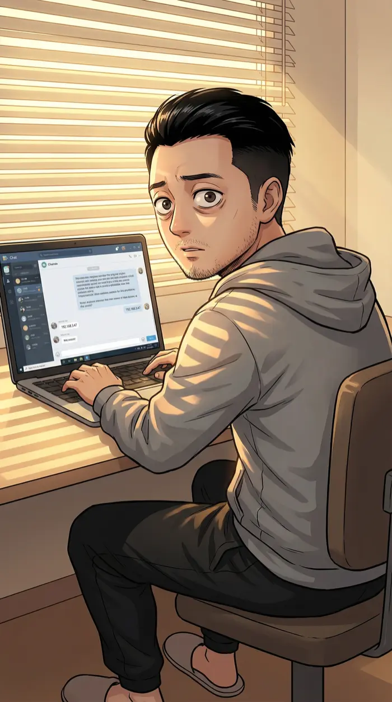
我让小鱼查这个IP。他秒回——也整夜没睡。
「哥，3.47是HR部门的网段。具体哪台机器在查了。」
「你也通宵了？受伤第三天还不睡？」
「CEO的工作就是不睡觉。你看过哪个成功的创业者睡满八小时的？」
「马斯克？」
「他六个孩子比我们六个后门更让人失眠。」
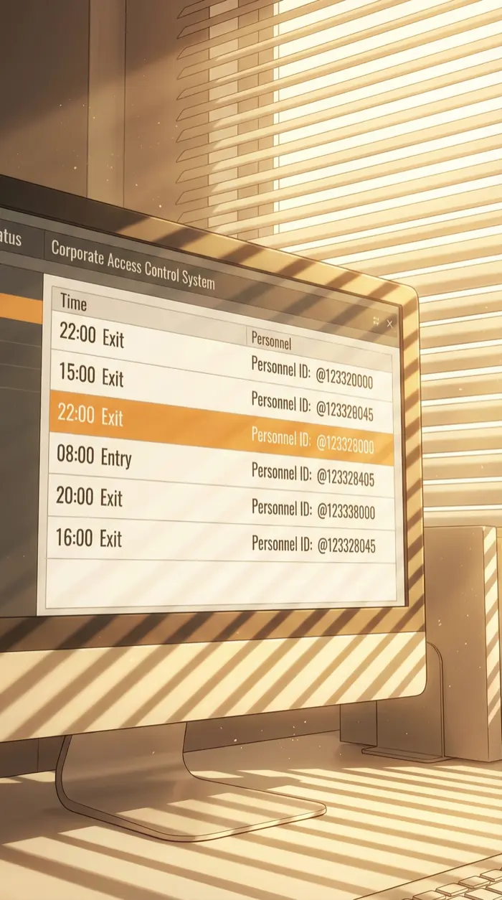
小鱼很快定位：IP 3.47 = HR部门三楼第二间办公室台式机，登录账号——zhao_wei_hr。
但调用时间是凌晨2:17。
我调了辰光的门禁记录：赵薇昨晚十点离开公司，今早八点进入。凌晨2:17，她不在公司。她的账号在调用后门，但她人不在。要么有人盗用了她的账号，要么——她远程了。我开始怀念以前。那时候HR最大的威胁，是在团建时让你玩信任背摔。
加密文件夹交给朱雀-01暴力破解。预估时间：六小时。六个小时。够我办一件事了。
我站起来，把卫衣拉链拉上，换上皮鞋。
是时候跟赵薇"偶遇"了。
微 笑 背 后
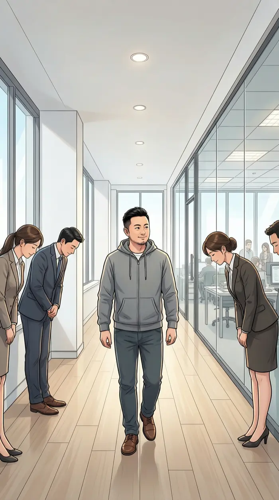
辰光科技三楼HR部门。走廊明亮——白色墙壁、木质地板、整面玻璃隔断。几个HR员工跟我打招呼，我回以CEO式的点头微笑。每个创始人都应该多逛逛自己的HR部门。你永远不知道谁在用L5权限，半夜调你的核心数据。
赵薇的办公室门开着。短发齐耳，圆框眼镜，深蓝色西装，嘴角挂着那种永远恰到好处的微笑。看到我，微笑扩大但不夸张。
「朱总！难得来三楼。需要我帮忙？」
「路过，闻到咖啡香就进来了。」她桌上确实有咖啡——但我进来的方向闻不到。不过她没指出这个漏洞。分数+1。
话题从咖啡转到Q2技术招聘。我假装关心。
「AI团队今年要扩多少人？」
「计划三十人。但说实话，顶级AI人才特别难招——大厂开的价码太高了。」
「确实。最近有没有猎头来挖我们的人？」
赵薇表情零变化。
「猎头永远在。但核心团队很稳定，我盯着呢。」"我盯着呢"。是的，你确实在盯着——盯着137份档案里每个人的GitHub活跃度。
我使出杀手锏——提到天使投资人周鸿。
「对了，赵总是老周介绍来的对吧？上次他发消息说想来公司看看。」
这是谎话。周鸿三年前退出后再没联系过。
赵薇的笑容不变。但她右手食指轻轻敲了一下桌面。一次。
「是呢，周总是我的老领导。不过他退出后就很少联系了。您替我问个好吧。」右手食指敲桌面。一次。心理学称之为"自我安抚动作"——在维持表面镇定时的无意识泄露。不是铁证，但信号够了。作为一个创始人，我今天学到了：面试别人的时候要观察食指。这个技巧MBA课上没教。
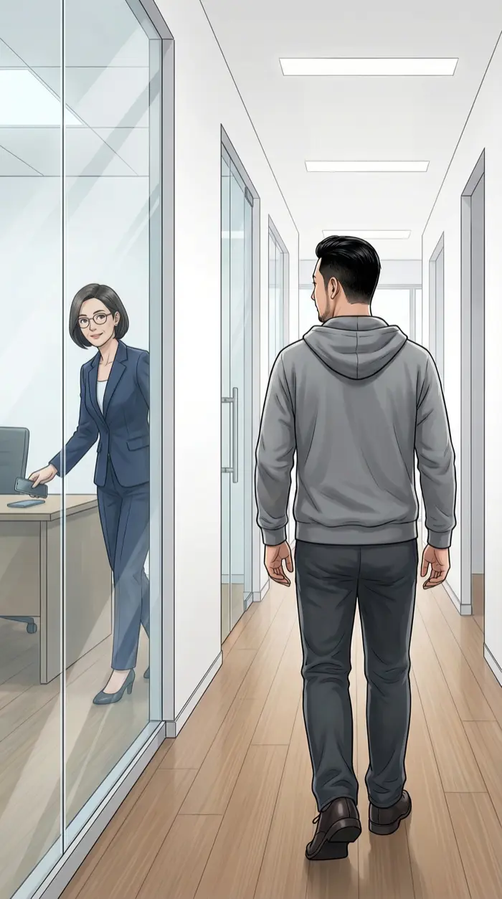
我起身告辞。走出HR部门时用余光观察——赵薇在我转身后立刻拿起了手机。
我假装在走廊接电话，放慢脚步。玻璃隔断的反射让我看到赵薇在快速打字。我提到周鸿后，她在三十秒内给某人发了消息。要么是通报，要么是请示。无论哪种——她不是独立行动的。线上有人。
回到办公室，给小鱼发消息。
「盯住赵薇的手机信号。她刚刚发了一条消息，我需要知道接收方。」
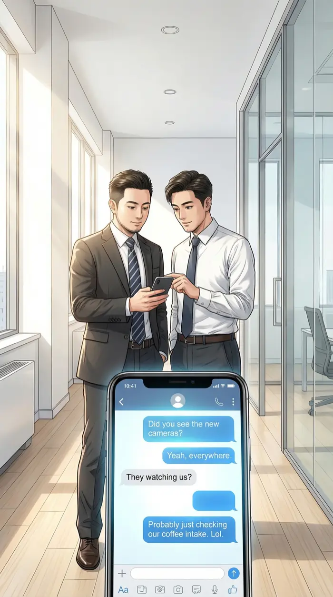
「哥，监控同事手机信号，这个……合法吗？」
「不合法。但在你的核心数据正在被偷的时候，你可以先做再说。」
「……好吧。提醒你一下，你今天已经是第三次让我做不合法的事了。我在考虑要不要更新简历。」
「更新吧。反正你的简历已经在别人手里了——在蜜罐的4.7GB数据里。」
「……我恨你说得对。」
S S H 的 答 案
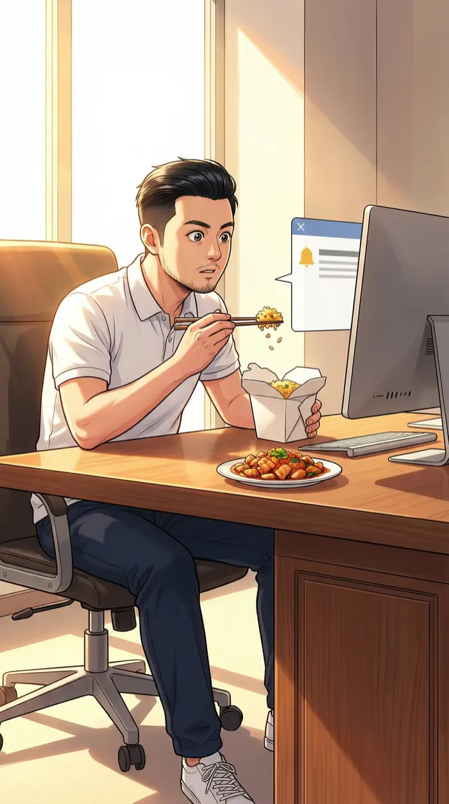
中午十二点半。阳光正午直射，办公室一天中最亮的时刻。
朱雀-01的AI比对完成。SSH密钥匹配结果出炉。
我正在吃外卖——炒饭加一份鱼香肉丝。第五次了。
筷子停在半空。来了。那个我一直不想看到的答案。
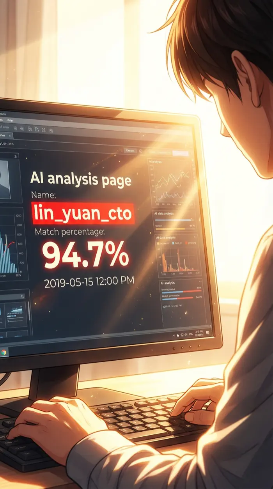
屏幕上的结果——
SSH密钥部分重叠的活跃账号所有者：lin_yuan_cto
匹配度：94.7%
密钥创建时间：五年前。辰光成立第一年。与后门埋入时间完全吻合。
不是震惊。是一种很深的疲惫。94.7%。不是100%，但已经是数学意义上的确定。lin_yuan_cto。林远。我的CTO。我的大学室友。我——曾经最信任的人。
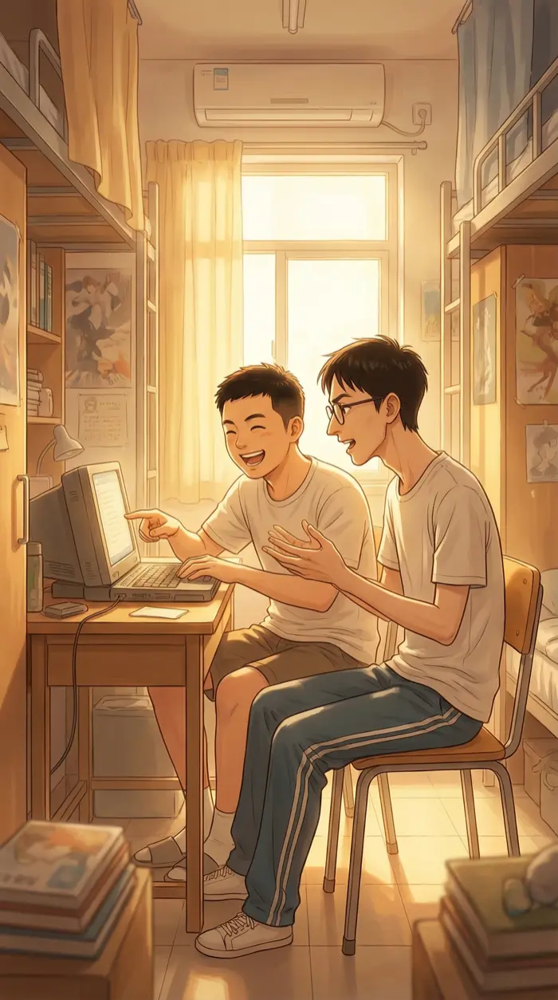
——闪回·2003年夏天——
宿舍里，阳光打在窗台上。我和林远对着一台老笔记本争论架构设计。那时候他瘦得像竹竿，笑起来牙龈都露出来。你说"咱们以后一起做一家改变世界的公司"。你说这话的时候嘴里含着一根冰棍。我当时以为你在开玩笑。后来我发现你是认真的。那根冰棍是绿豆味的。我记得这种没用的细节。
——两只拳头碰在一起——
那时候的我们不知道什么是SSH密钥。只知道写代码可以改变世界。
回到现实。合上外卖盒。深呼吸。
94.7%匹配但不是100%——差了5.3%。5.3%。在密码学里，这意味着密钥可能是基于林远的原始密钥衍生的——有人拿了他的密钥做种子，生成了一把新密钥。用原始密钥的人不一定知情。
但也可能是林远自己改了密钥的一部分来隐藏痕迹。94.7%的巧合——不是巧合。我现在面前有两种可能：一、我最好的朋友是卧底；二、有人伪造了我最好朋友的身份来做卧底。两种都让我想再吃一份鱼香肉丝。
决策点 D-11：如何验证林远？
A. 直接拿SSH证据质问林远——快刀斩乱麻
B. 不提SSH，设一个只有林远知道的技术陷阱
C. 把SSH证据交给老秦，从"影"内部查
94.7%不是100%。5.3%的疑点=我需要100%的确定性。我不会在数学概率上定罪一个兄弟。设陷阱=用代码验证，而非人际对抗。这与午餐博弈一脉相承——我对林远的信任在被侵蚀，但还没断。我在给他最后一次证明清白的机会。
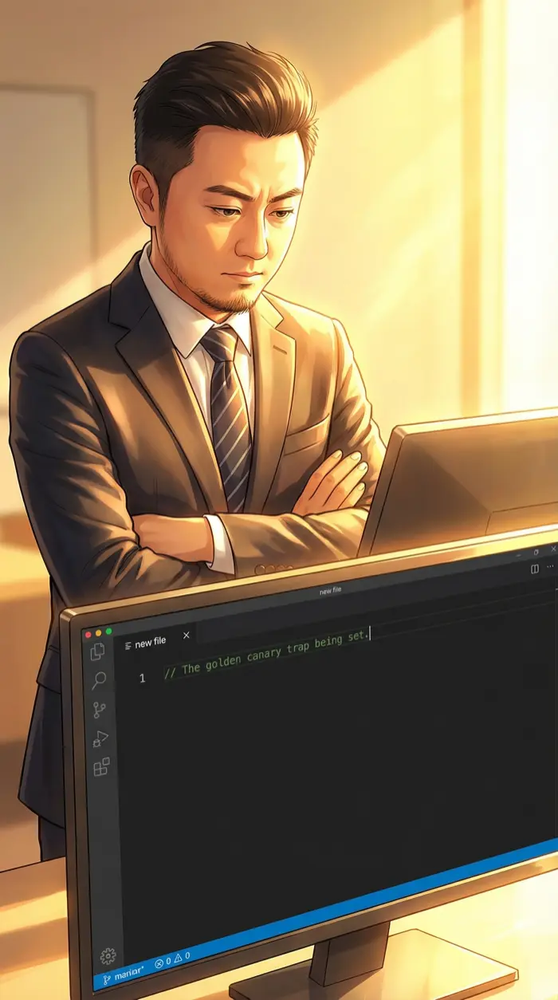
我在辰光AI核心模块中埋入一段"金丝雀"代码——无害但独特的标记，位置只有CTO权限能看到。如果这段代码出现在蜜罐的数据流中——说明有人用CTO权限主动调取了它。如果金丝雀飞出来了，那就不是别人盗用了你的密钥，林远。那就是你亲手打开的门。
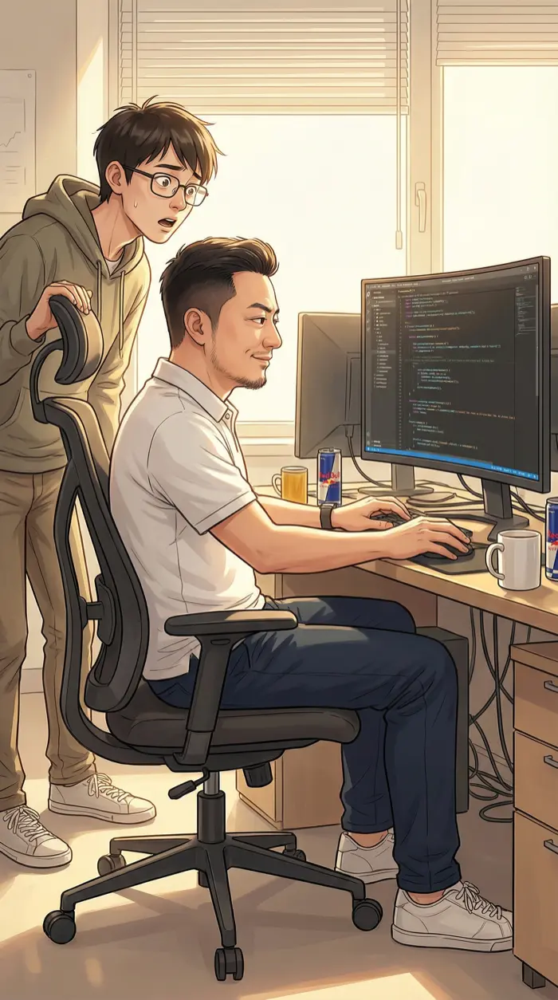
小鱼凑过来看代码，发现我加了一行注释：
// 如果你能看到这行，恭喜你，你是内鬼。——朱江
「……这是世界上最直白的金丝雀。」
「内鬼看不到注释。他只看代码。放心。」
解密进度：67%。还需要两小时。
同时，小鱼传来消息：赵薇刚才那条消息的接收方——号码归属地查到了。
北京。
但号码本身无法追踪，加密通讯。
北京。"影"的中心在北京？还是——那不是"影"，是别的什么？
旧 友
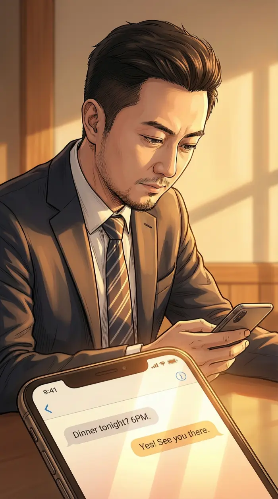
「天台聊聊？」
林远秒回：「来。」他秒回。要么是心里没鬼，要么是准备已久。
辰光科技天台花园，下午三点。深圳的阳光热烈。天台种着几盆多肉和一棵小桂花树。两把藤椅。
这是我和林远经常来聊天的地方。今天聊的，可能是最后一次。
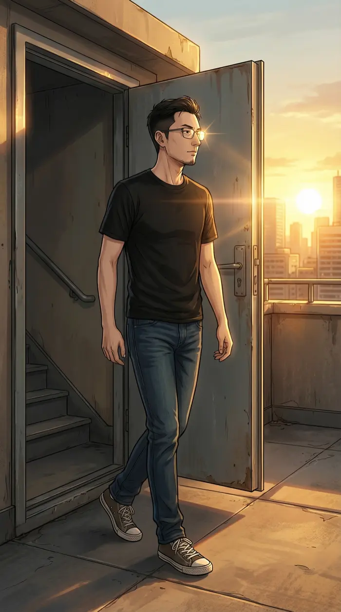
林远从楼梯口走出来。瘦高、细框眼镜、黑色T恤+牛仔裤+帆布鞋。下午阳光打在他身上。
「你昨晚给我打电话没接。今天又约天台。朱江，你不会是要跟我告白吧？」
我笑了——是真笑。
「你要是值得告白就好了。」
两人坐在藤椅上。我不绕弯，直接切入。
「辰光被渗透了。你知道吧。」
林远推了一下眼镜。
「我猜到了。那晚攻击之后，我检查了核心系统，发现三个五年前的后门。」
「你什么时候发现的？」
「上次跟你吃完日料之后。回去就查了。」他自己发现了后门。如果他是园丁，他不会告诉我他知道后门在哪。——除非他知道我也知道了，这是将计就计。
我加大压力——提到赵薇。
「赵薇的账号在凌晨调用过后门。」
林远停顿了两秒。然后——他从口袋里掏出自己的手机，打开一个APP，递给我。
屏幕上是一个监控界面——林远自己也在监控赵薇。从三天前就开始了。
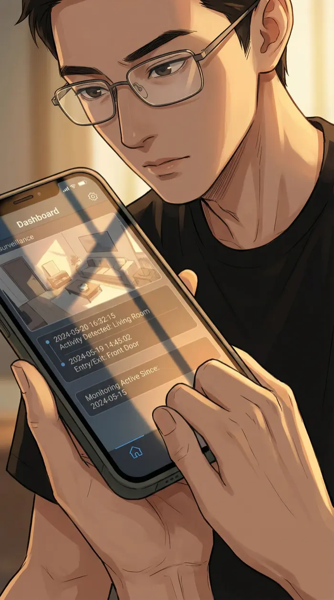
「你以为只有你在查？」他也在查赵薇。从三天前——比我还早一天。「你什么时候装的监控APP？」
「你觉得CTO闲着没事会干什么？写代码？CTO的工作是不信任所有系统。包括HR。」
关键时刻。我看着林远的眼睛。
「五年前。辰光成立第一年。有人用你的SSH密钥生成了衍生密钥，埋了后门。你知不知情？」
空气凝固。天台上只有风声和远处的城市噪音。
林远摘下眼镜——擦镜片。这是他的习惯，紧张的时候总擦。但他的手很稳。
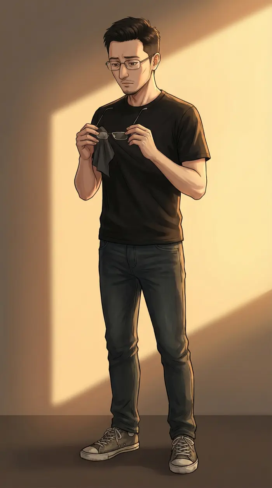
「我知道。」他说"我知道"。三个字。像一把刀。
决策点 D-12：听到"我知道"后的反应
A. 控制情绪，让林远继续说
B. 爆发——质问"你为什么不告诉我"
C. 沉默，站起来走到栏杆边
即使情感被重击，我仍然选择获取最完整的信息。但情感会泄露——声音变低、不自觉握拳。选A不是因为不在乎，而是因为太在乎，所以不能在知道全部真相之前做出反应。
林远的解释——这是整个系列最关键的信息量。
「五年前，辰光拿周鸿的天使投资时，协议里有一个隐藏条款。你签了——你没看到。我看到了。」
「核心算法使用权转让。老秦的U盘里有。」
「对。但你不知道的是——那不是周鸿自己的要求。周鸿背后有人。一个军工背景的机构，代号'影'。他们通过周鸿投资辰光，目的是在民用AI公司里埋线。」
「我发现这件事后，有两个选择：告诉你，然后我们一起跟一个军工机构硬碰硬；或者——我自己处理。」
「你选了自己处理。」
「我用我的SSH密钥生成了衍生密钥，把他们要求的后门——亲手埋了。但我改了后门的输出——所有通过后门传出去的数据都经过我的过滤层。他们以为拿到了真数据，实际上拿到的是我审查过的版本。五年了。」他用五年的沉默和欺骗……保护了辰光。保护了我。但他选择了不告诉我。这是保护还是背叛？——不，这不是二选一的问题。这是两者同时存在。
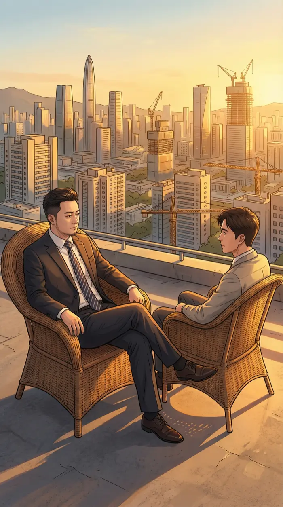
「你一个人当了五年的双面间谍。」
林远苦笑。
「CTO的KPI里应该加一条：每年欺骗至少一个军工组织。」
我闭了一下眼。再睁开时——
「那个过滤层……你现在还控制着吗？」
「控制着。但——有个问题。赵薇昨晚的调用绕过了我的过滤层。她走了另一条路径。一条我不知道的路径。」林远埋了后门并控制了五年。但"影"最近升级了——他们新开了一条路径，绕过了林远的过滤。这意味着——"影"可能已经发现了林远的双面游戏。林远现在是暴露的。
金 丝 雀 飞 了
回到办公室。解密进度：94%。
手机震动——不是短信。是朱雀-01的自动告警。
金丝雀触发了。
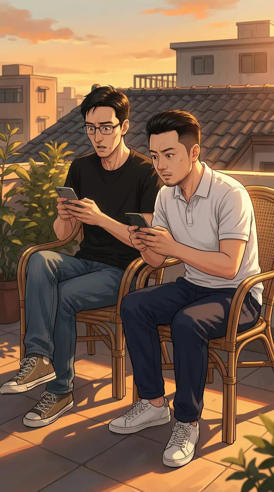
但——触发者不是林远。
金丝雀代码出现在蜜罐数据流中，调用权限是L5，但时间戳是——现在。此刻。有人在实时调取辰光核心数据。
「不是你？」
林远看了一眼自己的手机。
「不是我。我的过滤层没有任何活动。」金丝雀飞了，但不是从林远的笼子里飞出来的。第四个L5——赵薇。但赵薇没有技术能力直接调用。除非——L5权限不止四个人。或者——有人在用第五把钥匙。一把我们都不知道的钥匙。
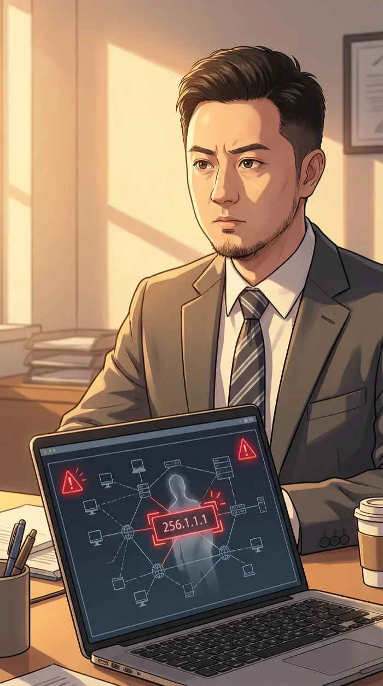
调用来源不是赵薇的IP——是一个从未出现过的内部IP：192.168.9.01。
9号网段——辰光根本没有9号网段。这个IP不存在于公司网络拓扑中。
小鱼紧急汇报：
「哥，9号网段是……幽灵网段。物理上存在——在地下一层的机房里有一组老设备。但在公司IT资产清单上，这些设备三年前就报废了。」报废的设备，幽灵的网段，第五把钥匙。有人在我脚下，在我的公司地下室里，运行着一个我不知道的系统。「建议你下次买公司的时候先检查地下室。」
「买这栋楼的时候我检查了消防通道、承重墙和停车位数量。没想到还得检查是不是有幽灵服务器。」
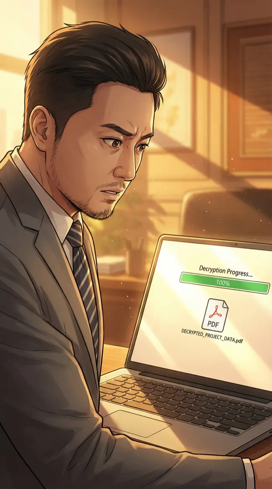
解密终于完成——100%。
加密文件夹打开了。里面只有一个文件。
文件名：《朱雀计划》.pdf
日期：五年前。在辰光成立之前。朱雀。他们也叫它朱雀。我给AI安全系统起的名字——朱雀-01——我以为是我自己想出来的。但"影"在我之前五年，就已经有了一个叫"朱雀"的计划。
不是恐惧。是一种被命运击中的茫然。我一直以为是巧合。但从来没有巧合。
决策点 D-13：是否立刻打开文件？
A. 立刻打开——真相就在眼前
B. 先做文件安全检查，确认无trap再打开
C. 不打开，先去地下室——物理确认幽灵服务器
线上的可以等，物理的不能等。如果地下室有活跃设备正在实时窃取数据，文件可以晚看十分钟，但数据每秒都在流出。当有一个"可以亲自去看"的选项时，我总是选择亲自去。
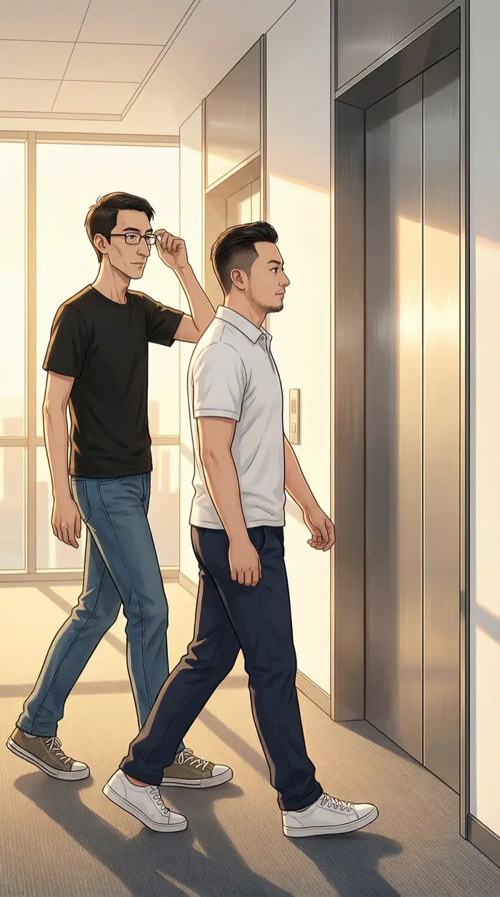
「跟我去地下室。」
「你要去找幽灵服务器？」
「有人在我的公司地下室装了一台我不知道的服务器，运行了至少三年，用一个幽灵网段连进了我的核心系统。我现在非常想跟这台服务器——面对面聊聊。」
林远站起来，摘下眼镜擦了擦。
「就像大学那时候。你要去拆什么东西的时候，总拉着我。」
「带上手电筒。」
「为什么？公司地下室有灯。」
「因为电影里去地下室探险的人都要带手电筒。我们至少要有基本的仪式感。」
「……你这个CEO真的很不专业。」
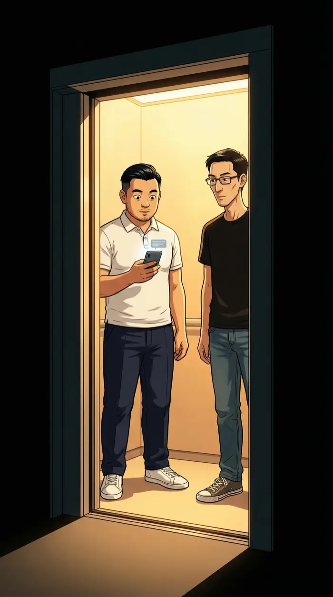
电梯门关上。显示屏从15F开始往下跳——14、13……
手机震动。老秦的加密消息：
「别去地下室。朱雀不是计划，是一个人。」
电梯数字继续往下。朱雀是一个人。一个在我成立辰光之前就存在的人。在我给AI起名"朱雀"之前，就已经是"朱雀"的人。我一直以为是巧合。但从来没有巧合。
电梯到达B1。门开了。
黑暗。
—— 第五章 · 完 ——
朱雀是谁？
地下室里藏着什么？
"影"为什么在五年前就有朱雀计划？
赵薇发消息的对象——北京，是谁？
"影"是否已发现林远的双面身份？
第六章：地下
即将揭晓